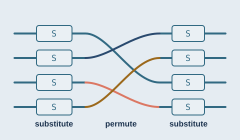
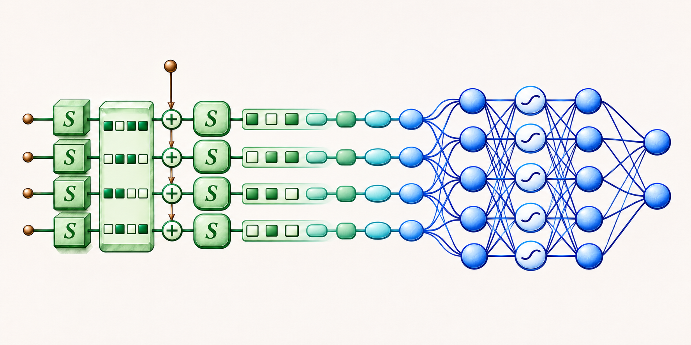
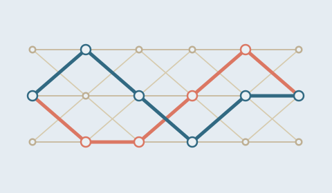
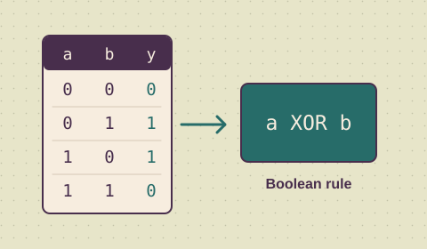
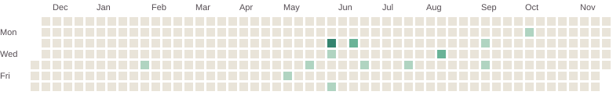

Symmetric design and implementation
We design lightweight primitives and study how their structure translates into efficient, constant-time software.
SyLLab · NTU Singapore
We design and analyze symmetric ciphers, study the security of neural networks, and build models whose decisions can be explained and verified.

Describe a symmetric primitive once. Reuse the same model to visualize its structure, automate cryptanalysis, and generate implementations.

We design lightweight primitives and study how their structure translates into efficient, constant-time software.

We use differential methods, constraint solvers and machine learning to analyze symmetric primitives.

We study neural-network weight recovery, adversarial attacks and the limits of model confidentiality.

We design compact neural architectures around Boolean functions and sparse rules for efficient inference and formal verification.
